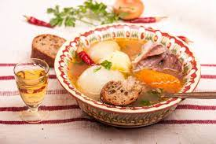

Нужните продукти:
Рецепта:
Телешките гърди се поставят в подходящ съд, заливат се с 6 чаши гореща вода, посоляват се. Добавя се корен магданоз и се вари на слаб огън, като постоянно се отпенва. Бульонът се прецежда, а месото се обезкостява и се нарязва на по - едри парчета. В горещия бульон се прибавят нарязаните на кръгчета моркови и целината, а 10 минути след като кипнат, се добавят картофите, нарязани на кубчета, доматите, срязани на четвъртинки, и обезкостеното месо. След сваряването на картофите яденето се смъква от огъня, добавя му се черен пипер и се посолява при нужда. При сервиране телешкото варено се посипва със ситно нарязан магданоз.
Допълнителна информация:
Телешкото варено е перфектната комбинация с една типично българаска 50 градусова ракия от на Ефтим сайта.